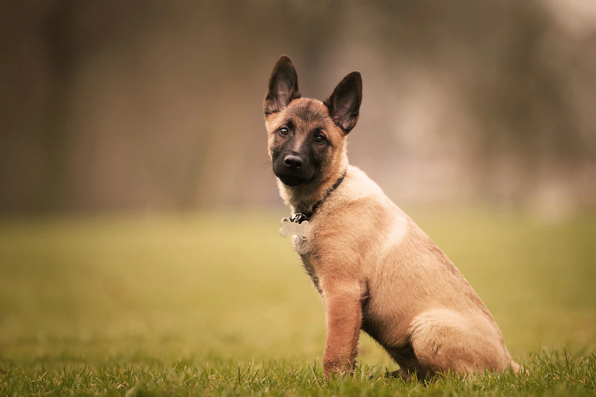

The education of the puppy begins from the first weeks by the mother. The puppy needs to be educated and socialized in order to become a balanced and problem-free adult dog. Some parts of the education will include, for example, learning to stay home alone or not to pee in the house, but also playing appropriately with one's fellow humans.
Brini Dog School
Education and training
Two fundamental things in your dog's life
Training can usually be started in the first few months with simple and useful things, such as recall. You can then gradually move on to more advanced things but always respecting our friend's times. Training in daily life is useful in many situations where we must necessarily have control of our dog.
Our activities

Puppy class
When a puppy becomes part of a family, the people who welcome him don't always understand him. Educating a 3-month-old dog is not easy because humans expect certain behaviors from him, such as going outside, always being calm, responding to calls or not pulling on the leash, which he is unable to implement. Each of these activities, to be learned, needs specific times and ways which, if followed, allow an owner not to rush after his dog. For this reason it is advisable to opt for 'prevention' rather than 'cure' by requesting the help of a dog educator for a basic educational path that can be both individual and group.

Training
In the training course we teach the dog the basic commands through targeted exercises that you can easily repeat at home. We focus first of all on essential commands such as recall, in training it is essential to achieve and maintain a strong relationship of mutual trust and listening between man and dog. Dog training exercises are real games because through positive reinforcement and play, dogs learn everything better and faster! Suitable for all types of dog, this course will help your friend channel his energy or bring it out through motivation.

Trakking with dogs
The social walk is a group activity that is usually carried out in various settings. It is not limited to just running the dog, but extends to all aspects related to social interactions. Consequently we are going to touch the mental structure of the dog, but also of the handler. They take place with the dog on a leash and we start after a careful evaluation of the dogs present. By consistently selecting the position of each of them, they have the opportunity to get to know each other slowly along the way. There are some dogs that show difficulty being in groups. In these cases we try to facilitate them with distances, which clearly falls within the sphere of communication between dogs